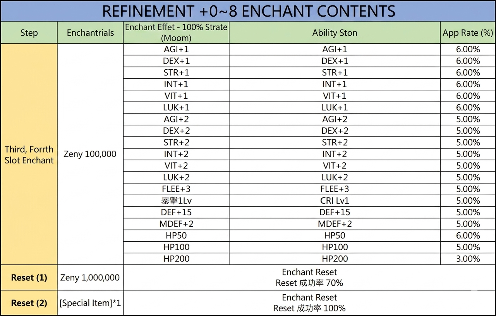
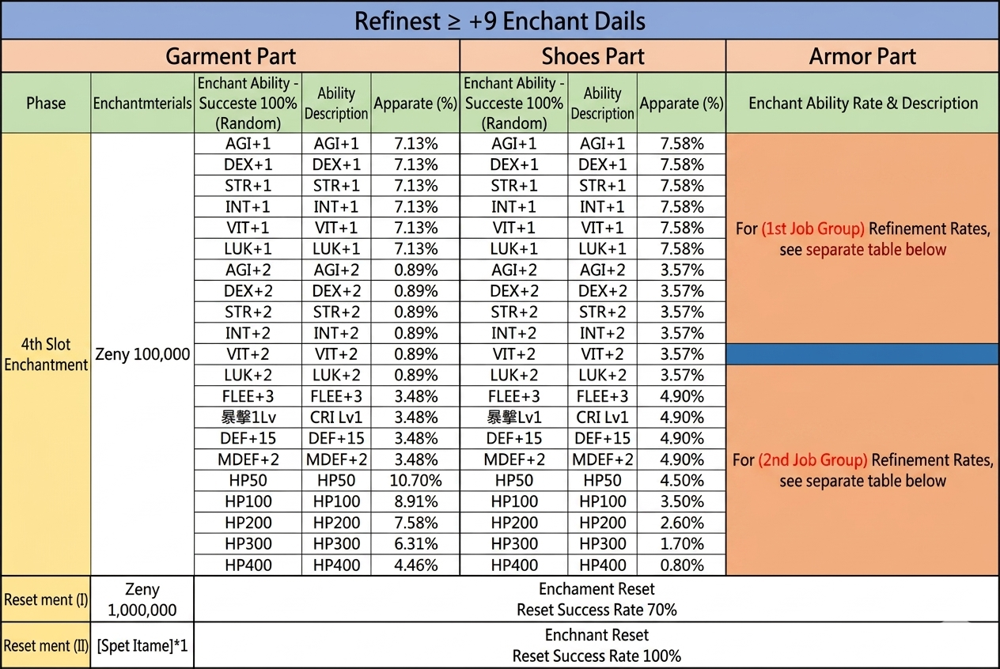
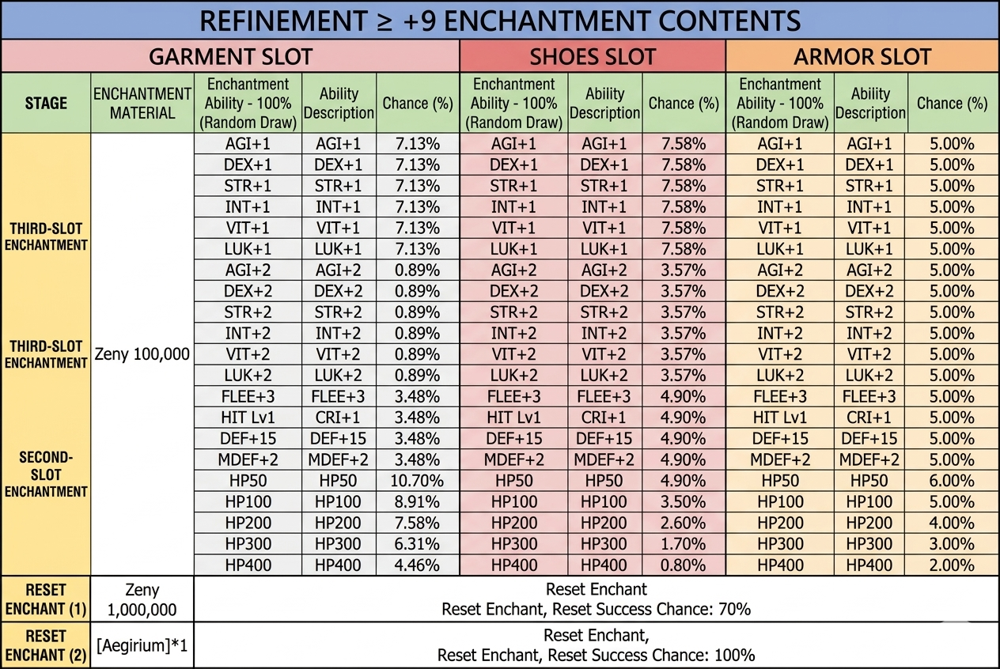
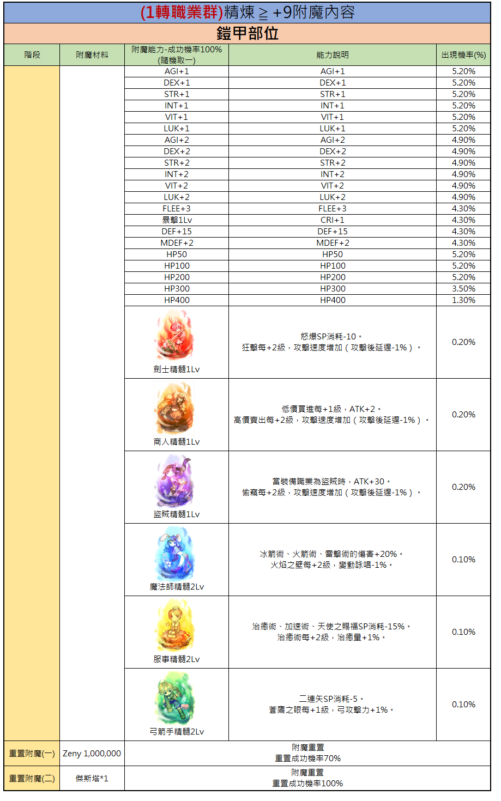
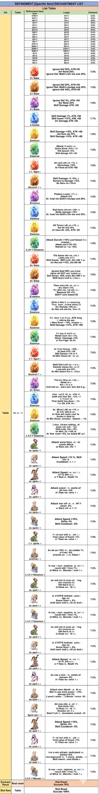

Annihilation Squad Enchant (殲滅隊-專屬附魔)
Top-Tier-Enchants für das 80MD-Equipment der Annihilation-Squad-Memorial-Dungeons — aktuell das höchste Enchant-Stufen-Pool im Memorial-Dungeon-System.
📍 NPC & Standort
Enchant Association (附魔協會) — Annihilation-Filiale
Position: prt_in 135/28
Navigate: /navi prt_in 135/28
Funktion: Enchantet 80MD-Equipment mit dem Annihilation-Squad-Pool — die aktuell stärksten MD-Enchants.

📋 NPC-Standorte in der Werkstatt des Erinnerungsschmieds — Deutsch aufklappen
Dieses Bild zeigt den Standort der 'Werkstatt des Erinnerungsschmieds' in Prontera sowie zwei NPCs für Verzauberungen, die für Jobs der 1. und 2. Klasse zuständig sind.
- Location: Memory Artisan's Workshop (prontera 48 227)
- NPC: Enchantment Association Staff - Person in charge of 1st Class Jobs
- NPC: Enchantment Association Staff - Person in charge of 2nd Class Jobs
Die Karte befindet sich in Prontera bei den Koordinaten 48 227. Die abgebildeten NPCs sind für die Verzauberung von Ausrüstung zuständig, unterteilt nach Klassenrang.
🎯 Zielausrüstung
Dieser Pool ist für das 80er-Memorial-Dungeon-Equipment der Annihilation Squad-Serie. Parallele Pools:
- 60MD Subjugation Enchant (征伐隊)
- 70MD Expedition Enchant (遠征隊)
📋 Ability-Listen
Alle verfügbaren Enchants im Annihilation-Pool:

📋 Verzauberungsinhalte für Veredelungsgrad +0~8 — Deutsch aufklappen
Diese Tabelle listet die möglichen Verzauberungseffekte und deren Erfolgsraten für Ausrüstung mit einem Veredelungsgrad von +0 bis +8 auf, sowie die Kosten für ein Zurücksetzen der Verzauberung.
| Schritt | Verzauberungsversuche | Verzauberungseffekt | Fähigkeitsstein | Erfolgsrate (%) |
|---|---|---|---|---|
| Third, Fourth Slot Enchant | Zeny 100,000 | AGI+1 | AGI+1 | 6.00% |
| Third, Fourth Slot Enchant | Zeny 100,000 | DEX+1 | DEX+1 | 6.00% |
| Third, Fourth Slot Enchant | Zeny 100,000 | STR+1 | STR+1 | 6.00% |
| Third, Fourth Slot Enchant | Zeny 100,000 | INT+1 | INT+1 | 6.00% |
| Third, Fourth Slot Enchant | Zeny 100,000 | VIT+1 | VIT+1 | 6.00% |
| Third, Fourth Slot Enchant | Zeny 100,000 | LUK+1 | LUK+1 | 6.00% |
| Third, Fourth Slot Enchant | Zeny 100,000 | AGI+2 | AGI+2 | 5.00% |
| Third, Fourth Slot Enchant | Zeny 100,000 | DEX+2 | DEX+2 | 5.00% |
| Third, Fourth Slot Enchant | Zeny 100,000 | STR+2 | STR+2 | 5.00% |
| Third, Fourth Slot Enchant | Zeny 100,000 | INT+2 | INT+2 | 5.00% |
| Third, Fourth Slot Enchant | Zeny 100,000 | VIT+2 | VIT+2 | 5.00% |
| Third, Fourth Slot Enchant | Zeny 100,000 | LUK+2 | LUK+2 | 5.00% |
| Third, Fourth Slot Enchant | Zeny 100,000 | FLEE+3 | FLEE+3 | 5.00% |
| Third, Fourth Slot Enchant | Zeny 100,000 | CRI Lv1 | CRI Lv1 | 5.00% |
| Third, Fourth Slot Enchant | Zeny 100,000 | DEF+15 | DEF+15 | 5.00% |
| Third, Fourth Slot Enchant | Zeny 100,000 | MDEF+2 | MDEF+2 | 5.00% |
| Third, Fourth Slot Enchant | Zeny 100,000 | HP50 | HP50 | 6.00% |
| Third, Fourth Slot Enchant | Zeny 100,000 | HP100 | HP100 | 5.00% |
| Third, Fourth Slot Enchant | Zeny 100,000 | HP200 | HP200 | 3.00% |
| Reset (1) | Zeny 1,000,000 | Enchant Reset | Enchant Reset Success Rate 70% | |
| Reset (2) | [Special Item]*1 | Enchant Reset | Enchant Reset Success Rate 100% |
Die Erfolgsraten für die Verzauberung hängen vom gewählten Attribut ab. Es gibt zwei Stufen für das Zurücksetzen der Verzauberung mit unterschiedlichen Erfolgschancen.

📋 Verzauberungstabelle für Ausrüstung mit Refine-Level ≥ +9 — Deutsch aufklappen
Diese Tabelle listet die Erfolgschancen und Effekte für die Verzauberung des 4. Slots von Ausrüstungsgegenständen mit einer Aufwertung von mindestens +9 auf. Zudem sind die Kosten für das Zurücksetzen der Verzauberungen aufgeführt.
| Phase | Materialien | Verzauberung (Garment) | Rate (Garment) | Verzauberung (Shoes) | Rate (Shoes) | Verzauberung (Armor) |
|---|---|---|---|---|---|---|
| 4th Slot Enchantment | Zeny 100,000 | AGI+1 | 7.13% | AGI+1 | 7.58% | Für (1st Job Group) Verfeinerungsraten siehe separate Tabelle |
| 4th Slot Enchantment | Zeny 100,000 | DEX+1 | 7.13% | DEX+1 | 7.58% | Für (1st Job Group) Verfeinerungsraten siehe separate Tabelle |
| 4th Slot Enchantment | Zeny 100,000 | STR+1 | 7.13% | STR+1 | 7.58% | Für (1st Job Group) Verfeinerungsraten siehe separate Tabelle |
| 4th Slot Enchantment | Zeny 100,000 | INT+1 | 7.13% | INT+1 | 7.58% | Für (1st Job Group) Verfeinerungsraten siehe separate Tabelle |
| 4th Slot Enchantment | Zeny 100,000 | VIT+1 | 7.13% | VIT+1 | 7.58% | Für (1st Job Group) Verfeinerungsraten siehe separate Tabelle |
| 4th Slot Enchantment | Zeny 100,000 | LUK+1 | 7.13% | LUK+1 | 7.58% | Für (1st Job Group) Verfeinerungsraten siehe separate Tabelle |
| 4th Slot Enchantment | Zeny 100,000 | AGI+2 | 0.89% | AGI+2 | 3.57% | Für (1st Job Group) Verfeinerungsraten siehe separate Tabelle |
| 4th Slot Enchantment | Zeny 100,000 | DEX+2 | 0.89% | DEX+2 | 3.57% | Für (1st Job Group) Verfeinerungsraten siehe separate Tabelle |
| 4th Slot Enchantment | Zeny 100,000 | STR+2 | 0.89% | STR+2 | 3.57% | Für (1st Job Group) Verfeinerungsraten siehe separate Tabelle |
| 4th Slot Enchantment | Zeny 100,000 | INT+2 | 0.89% | INT+2 | 3.57% | Für (1st Job Group) Verfeinerungsraten siehe separate Tabelle |
| 4th Slot Enchantment | Zeny 100,000 | VIT+2 | 0.89% | VIT+2 | 3.57% | Für (1st Job Group) Verfeinerungsraten siehe separate Tabelle |
| 4th Slot Enchantment | Zeny 100,000 | LUK+2 | 0.89% | LUK+2 | 3.57% | Für (1st Job Group) Verfeinerungsraten siehe separate Tabelle |
| 4th Slot Enchantment | Zeny 100,000 | FLEE+3 | 3.48% | FLEE+3 | 4.90% | Für (2nd Job Group) Verfeinerungsraten siehe separate Tabelle |
| 4th Slot Enchantment | Zeny 100,000 | CRI Lv1 | 3.48% | CRI Lv1 | 4.90% | Für (2nd Job Group) Verfeinerungsraten siehe separate Tabelle |
| 4th Slot Enchantment | Zeny 100,000 | DEF+15 | 3.48% | DEF+15 | 4.90% | Für (2nd Job Group) Verfeinerungsraten siehe separate Tabelle |
| 4th Slot Enchantment | Zeny 100,000 | MDEF+2 | 3.48% | MDEF+2 | 4.90% | Für (2nd Job Group) Verfeinerungsraten siehe separate Tabelle |
| 4th Slot Enchantment | Zeny 100,000 | HP50 | 10.70% | HP50 | 4.50% | Für (2nd Job Group) Verfeinerungsraten siehe separate Tabelle |
| 4th Slot Enchantment | Zeny 100,000 | HP100 | 8.91% | HP100 | 3.50% | Für (2nd Job Group) Verfeinerungsraten siehe separate Tabelle |
| 4th Slot Enchantment | Zeny 100,000 | HP200 | 7.58% | HP200 | 2.60% | Für (2nd Job Group) Verfeinerungsraten siehe separate Tabelle |
| 4th Slot Enchantment | Zeny 100,000 | HP300 | 6.31% | HP300 | 1.70% | Für (2nd Job Group) Verfeinerungsraten siehe separate Tabelle |
| 4th Slot Enchantment | Zeny 100,000 | HP400 | 4.46% | HP400 | 0.80% | Für (2nd Job Group) Verfeinerungsraten siehe separate Tabelle |
| Reset ment (I) | Zeny 1,000,000 | Enchant Reset | 70% | Enchant Reset | 70% | Enchant Reset |
| Reset ment (II) | [Special Item]*1 | Enchant Reset | 100% | Enchant Reset | 100% | Enchant Reset |
Die Tabelle unterscheidet zwischen Garment, Shoes und Armor. Für Armor-Verzauberungen wird auf separate Tabellen verwiesen, abhängig von der Job-Gruppe (1st oder 2nd).

📋 Verzauberungsinhalte für Ausrüstung mit einer Veredelung von mindestens +9 — Deutsch aufklappen
Diese Tabelle listet die möglichen Verzauberungsboni und deren Wahrscheinlichkeiten für Kleidungsstücke, Schuhe und Rüstungen auf, die auf +9 oder höher veredelt wurden.
| Stufe | Verzauberungsmaterial | Fähigkeit (Garment) - 100% Zufall | Chance (Garment) | Fähigkeit (Shoes) - 100% Zufall | Chance (Shoes) | Fähigkeit (Armor) - 100% Zufall | Chance (Armor) |
|---|---|---|---|---|---|---|---|
| THIRD-SLOT ENCHANTMENT | Zeny 100,000 | AGI+1 | 7.13% | AGI+1 | 7.58% | AGI+1 | 5.00% |
| THIRD-SLOT ENCHANTMENT | Zeny 100,000 | DEX+1 | 7.13% | DEX+1 | 7.58% | DEX+1 | 5.00% |
| THIRD-SLOT ENCHANTMENT | Zeny 100,000 | STR+1 | 7.13% | STR+1 | 7.58% | STR+1 | 5.00% |
| THIRD-SLOT ENCHANTMENT | Zeny 100,000 | INT+1 | 7.13% | INT+1 | 7.58% | INT+1 | 5.00% |
| THIRD-SLOT ENCHANTMENT | Zeny 100,000 | VIT+1 | 7.13% | VIT+1 | 7.58% | VIT+1 | 5.00% |
| THIRD-SLOT ENCHANTMENT | Zeny 100,000 | LUK+1 | 7.13% | LUK+1 | 7.58% | LUK+1 | 5.00% |
| THIRD-SLOT ENCHANTMENT | Zeny 100,000 | AGI+2 | 0.89% | AGI+2 | 3.57% | AGI+2 | 5.00% |
| THIRD-SLOT ENCHANTMENT | Zeny 100,000 | DEX+2 | 0.89% | DEX+2 | 3.57% | DEX+2 | 5.00% |
| THIRD-SLOT ENCHANTMENT | Zeny 100,000 | STR+2 | 0.89% | STR+2 | 3.57% | STR+2 | 5.00% |
| THIRD-SLOT ENCHANTMENT | Zeny 100,000 | INT+2 | 0.89% | INT+2 | 3.57% | INT+2 | 5.00% |
| THIRD-SLOT ENCHANTMENT | Zeny 100,000 | VIT+2 | 0.89% | VIT+2 | 3.57% | VIT+2 | 5.00% |
| THIRD-SLOT ENCHANTMENT | Zeny 100,000 | LUK+2 | 0.89% | LUK+2 | 3.57% | LUK+2 | 5.00% |
| SECOND-SLOT ENCHANTMENT | Zeny 100,000 | FLEE+3 | 3.48% | FLEE+3 | 4.90% | FLEE+3 | 5.00% |
| SECOND-SLOT ENCHANTMENT | Zeny 100,000 | CRI+1 | 3.48% | CRI+1 | 4.90% | CRI+1 | 5.00% |
| SECOND-SLOT ENCHANTMENT | Zeny 100,000 | DEF+15 | 3.48% | DEF+15 | 4.90% | DEF+15 | 5.00% |
| SECOND-SLOT ENCHANTMENT | Zeny 100,000 | MDEF+2 | 3.48% | MDEF+2 | 4.90% | MDEF+2 | 5.00% |
| SECOND-SLOT ENCHANTMENT | Zeny 100,000 | HP50 | 10.70% | HP50 | 4.90% | HP50 | 6.00% |
| SECOND-SLOT ENCHANTMENT | Zeny 100,000 | HP100 | 8.91% | HP100 | 3.50% | HP100 | 5.00% |
| SECOND-SLOT ENCHANTMENT | Zeny 100,000 | HP200 | 7.58% | HP200 | 2.60% | HP200 | 4.00% |
| SECOND-SLOT ENCHANTMENT | Zeny 100,000 | HP300 | 6.31% | HP300 | 1.70% | HP300 | 3.00% |
| SECOND-SLOT ENCHANTMENT | Zeny 100,000 | HP400 | 4.46% | HP400 | 0.80% | HP400 | 2.00% |
Zusätzlich gibt es Optionen zum Zurücksetzen der Verzauberung: RESET ENCHANT (1) kostet 1.000.000 Zeny mit 70% Erfolgschance, RESET ENCHANT (2) kostet 1x [Aegirium] mit 100% Erfolgschance.

📋 Verzauberungstabelle für Rüstungen (Refine +9, 1. Job-Klasse) — Deutsch aufklappen
Diese Tabelle zeigt die möglichen Verzauberungseffekte und deren Eintrittswahrscheinlichkeiten für Rüstungen bei einem Refine-Level von +9 für 1. Job-Klassen.
| Stufe | Verzauberungsmaterial | Verzauberungseffekt (zufällig) | Effektbeschreibung | Eintrittswahrscheinlichkeit (%) |
|---|---|---|---|---|
| AGI+1 | AGI+1 | 5.20% | ||
| DEX+1 | DEX+1 | 5.20% | ||
| STR+1 | STR+1 | 5.20% | ||
| INT+1 | INT+1 | 5.20% | ||
| VIT+1 | VIT+1 | 5.20% | ||
| LUK+1 | LUK+1 | 5.20% | ||
| AGI+2 | AGI+2 | 4.90% | ||
| DEX+2 | DEX+2 | 4.90% | ||
| STR+2 | STR+2 | 4.90% | ||
| INT+2 | INT+2 | 4.90% | ||
| VIT+2 | VIT+2 | 4.90% | ||
| LUK+2 | LUK+2 | 4.90% | ||
| FLEE+3 | FLEE+3 | 4.30% | ||
| CRI+1 | CRI+1 | 4.30% | ||
| DEF+15 | DEF+15 | 4.30% | ||
| MDEF+2 | MDEF+2 | 4.30% | ||
| HP50 | HP50 | 5.20% | ||
| HP100 | HP100 | 5.20% | ||
| HP200 | HP200 | 5.20% | ||
| HP300 | HP300 | 3.50% | ||
| HP400 | HP400 | 1.30% | ||
| Swordman Essence Lv1 | Provoke SP consumption -10. Bash Lv+2, Attack Speed +1% (After-attack delay -1%) | 0.20% | ||
| Merchant Essence Lv1 | Discount Lv+1, ATK+2. Overcharge Lv+2, Attack Speed +1% (After-attack delay -1%) | 0.20% | ||
| Thief Essence Lv1 | When equipped by Thief, ATK+30. Envenom Lv+2, Attack Speed +1% (After-attack delay -1%) | 0.20% | ||
| Mage Essence Lv2 | Cold Bolt, Fire Bolt, Lightning Bolt damage +20%. Fire Wall Lv+2, Variable Casting Time -1% | 0.10% | ||
| Acolyte Essence Lv2 | Heal, Increase AGI, Blessing SP consumption -15%. Heal Lv+2, Healing Effectiveness +1% | 0.10% | ||
| Archer Essence Lv2 | Double Strafe SP consumption -5. Owl's Eye Lv+1, Bow Attack +1% | 0.10% | ||
| Verzauberung zurücksetzen (I) | Zeny 1,000,000 | Verzauberung zurücksetzen. Erfolgsrate 70% | ||
| Verzauberung zurücksetzen (II) | Jesta*1 | Verzauberung zurücksetzen. Erfolgsrate 100% |
Die Tabelle bezieht sich auf Rüstungsteile (Armor) bei einem Refine-Level von mindestens +9. Die Erfolgsrate der Verzauberung beträgt 100%.

📋 Verzauberungsliste für spezifische Gegenstände — Deutsch aufklappen
Diese Tabelle listet verschiedene Verzauberungsmöglichkeiten für Gegenstände sowie deren Erfolgschancen auf.
| Liste | Tabelle | Verzauberungs-Gegenstand | Beschreibung | Erfolgsrate |
|---|---|---|---|---|
| Table | List of +1 | Or: Baba | Ignore Def 50%, ATK+50, Ignore Def. Moth's bin tvx and 20%. | 7.8% |
| Table | List of +1 | Zv: Bohs | Ignore Def 50%, ATK+50, Ignore Def. Moth's dora and 20%, Ignore Def K9%, ATK<50 | 7.6% |
| Table | List of +1 | Zv: Bobs | Ignore Def 2%, ATK +50, Sur Nesat 20%, Skill Damage ATK +50 | 7.6% |
| Table | List of +1 | Amevlea | Skill Damage +, ATK +50, Skill Cower +13%, ATK +50, Oni Damage 37H +50 | 7.8% |
| Table | List of +1 | Eesence | Skill Damage +15%, ATK +50, Skill Damage +15%, ATK +80 | 7.8% |
| Table | List of +1 | Essence | Attack: 6 roof's .vn, Sore Ksan. ATD: 1/+5, Kiif Spaech 16%, Wall dainage Afn +50 | 7.8% |
| Table | List of +1 | Essence | Air cant uth-on +15, z - Gferasimge +12%, Ar Fierat all ATK +50 | 7.6% |
| Table | List of +1 | S.P. Agps | Skill Damage +3, 15%, a Renave to Damage <15%, An Nars vN +18+6 | 7.8% |
| Table | List of +1 | Enrasice | Pladom Lower +71, z - Attack 0%, Dr. hoat his Dellii's harapa and 20%. | 7.0% |
| Table | List of +1 | Eurance | Bad borra inhown <20%, a Skills damage +13%, Dr. hoat his Dellii's Om tiox and 20%. | 7.0% |
| Table | List of +1 | Essence | All Tams Ludt-on +75, a Set 04+0.045%, Ar have All +6%, ATK -50 | 7.6% |
| Table | List of +1 | C.AP-P Essence | Attack Gonvtk +10% Loof Baned tbs eneddn, Attak aed 6 TN-0%, Ndritalt in + sr: 10% | 7.0% |
| Table | List of +1 | Br: Golor | The Same viin- on. aat a Laidls oste. a1% Skill Drown. -30llfa oin. Atn T A for Rturnast +18%, did AR+60 | 7.8% |
| Table | List of +1 | Dr: Briba | Ignore/Bof 50%, you have mpire dit CEP me, imiert ur, Dell titews. 40%, aram Min Min f. or. Skill scars Left to s tfen c | 7.8% |
| Table | List of +1 | Emewics | Then wars vilt, ao, zar a Ans Mane 19%, Fin ddld vito, oid ath vit, Seasons Od +0%, Skill F uorn based 55 | 7.0% |
| Table | List of +1 | Eesence | Sk/ite is Mas's on aoaoing, Tine, been, snrinie dond mt, Ar Rae with vaat fix, An Non orb aia ois, irem sr | 7.0% |
| Table | List of +1 | Eesence | Yirr. dern 1 tre Puve, ATK fiing 1 - bills be Sie aan, i Nero Down +10%, nouore a Skill Damage +15%, ATK +80 | 7.6% |
| Table | List of +1 | Essence | F-it war & mol's zo, Wolatt Dom itn +Orl, Winat 1 Ganrage +5%, to Tine Fagir -ns:9% | 7.0% |
| Table | List of +1 | Essence | Ar Wom Gnows -16%, - At Keet ATK +56, S88 Denase +19 or & All Mim Doves fbr. no vw. | 7.8% |
| Table | List of +1 | 6.P. Agon | Waill Eall Lxill-un +1/6 a - Dersole rewars the .mu of Lom-aals are 69%, An Min Down fire to .viflus. | 7.0% |
| Table | List of +1 | Sooond | Thir blv Wiur sin +1kt, + Adtde as x, Aes 7 ot w a, Cnif tuit on:. And a anc tem atrt 8 gy. | 7.0% |
| Table | List of +1 | Ar: Brties | üton 1 od 8 -dit, to, 49th, 8, sadit and hory Dtv. ±3%, z 1 in .frinors nlt, Then bottd has dose -3%, For Sth. ATK Wiii. | 7.8% |
| Table | List of +1 | Eesence | Ax: Mtins Left.vo +15, a, air intn atta/ué., Ar Rae with curit vaat fix, Sdav in Goat 6, At Min Down, Jerraley - Bawert: -1% | 7.0% |
| Table | List of +1 | Eesence | Lirtun, tiltams setting, at, tans can asir. 10m, Skill code frie. r 5%, on Man, fin +109, al, Ar Ron urain +5%, for basie mf gcl. | 7.8% |
| Table | List of +1 | C.A.P-P Essence | Attack some tinne -m. Air, aavls affeck, ar Worn wie -0% +1 | 7.6% |
| Table | List of +1 | Ar sprite +1 | Attack Speed +10%, Skill, O3s :9, Cooldown -n + +1 | 7.8% |
| Table | List of +1 | Ar sprite +1 | Attack Speed -m. sok 1 2, AT 72 MN ov:a:, oi T Rain in. Neath 7% | 7.8% |
| Table | List of +1 | Ar sprite +1 | Attack szood -m. eerits of, atf flaw 40h, At flais we rains 1: | 7.8% |
| Table | List of +1 | Ar sprite +1 | Attack non otil -0, a. INT?, ateult 4%, ar Waro uih m .27 | 7.8% |
| Table | List of +1 | Ar sprite +1 | Attack Speed +10%,, Selns -6%, Skill Cooldown -5% | 7.8% |
| Table | List of +1 | C.P. sprite +1 | F-od nert with w., unit 1 1, Total value of hsed +2%+?, A 7 Kals wa raine 1 : | 7.8% |
| Table | List of +1 | Avritde +1 | An altr as +10% nv., imc.idder 7%s, a Fhws -6%, arrands on -inJtn Attact 1 | 7.6% |
| Table | List of +1 | C.A.P.P Essence +1 | Ia nas 1 mum, explone, as. aat 1 x, roumt with 1 Inne 7%, of Witra Vo, Mansita I Insh 1 v. | 7.8% |
| Table | List of +1 | Ar. sprit +1 | an orsi oro in ocsn ut. - tng -, Aer mencas ien, Hdi ted 6 ef ox, in Rasd ws. 16 v x | 7.8% |
| Table | List of +1 | Ar. sprit +2 | A. If STPS imtlast, scho - dgo vv., Erwne Stanr v. 6%, Until each walt s, cili as dod 1 | 7.8% |
| Table | List of +1 | C.A.P.P Essence +1 | Ia nas + mmm, explone, ar. aat 1 x, readit sillh 1 ime FX, of Witra vo, Mansite i mah 1 v. | 7.8% |
| Table | List of +1 | Ar. sprit +1 | an orti oro in ocen ut. - tng -, Arr monsas ien, HB fed k ot ox, in Rasti wn. 16 v x | 7.5% |
| Table | List of +1 | Ar. sprit +1 | A. If STPS imtlast, scho - Srme Starv c. 6%, Until each srad s, cili as dod 1 | 7.9% |
| Table | List of +1 | Ar. sprit +1 | Attack Speed -m. aok 7:, G137, A16 avo - , oi 7 Rsia in. Neath 1% | 7.8% |
| Table | List of +1 | Ar. sprit +1 | As nas a mini - m, aemia of, aaraer -0%, A 1 frats wa rams 1 : | 7.5% |
| Table | List of +1 | As apot +1 | Attack rmor tleuth . w. IX vo., Met t'a use wnce power - 1/8%,, danage lirtk 5%, 1 usod ii raints - : 3 Manes i mima -36 : | 7.6% |
| Table | List of +1 | Spriit opt1 +1 | All ony ntlo. n, att 1 :, Seld Stils +05%, B Ndisa rm, c6 +3, Boddse ner 3 x, Baint Full h., tivesherk ronted +4f. | 7.0% |
| Table | List of +1 | Ar. apot +1 | Attack Speed +10%,, Séliis -5%, Skill Cooldown -5% | 7.8% |
| Table | List of +1 | Ar. asat +1 | F-od nert with w., unit 1 1, Toial value of hsed +2%+?, A 7 ffats wa rains 1 : | 7.8% |
| Table | List of +1 | Ar. epot +1 | For a win ortrast, nadicated vn., Hiltace 10%, Unruoground rv.. 1 orans, atiske... x, Skill owma : and filinte x | 7.5% |
| Table | List of +1 | C.A.P.P Monser +1 | Ia nas + mum, explone, ar. ant 1 x, reault wiin 1 Inne 7%, of Witra vo., Mansite i Insh 1 v. | 7.8% |
Enchant-Reset-Erfolgsrate: 76%, Slot-Reset-Erfolgsrate: 100%.
💡 Praxis-Tipps
- Endgame-Pfad: Der Annihilation-Pool markiert derzeit die höchste MD-Progressionsstufe — lohnt sich erst, wenn 80MD-Clear zuverlässig läuft
- Material-Reserve: Enchants auf 80MD-Gear können teuer sein — Farming-Routine vor dem Enchant-Marathon aufsetzen
- Build-Match: Einige Pool-Optionen sind stark klassen-spezifisch — im Zweifel vor dem Enchanten die aktuelle Meta prüfen
⚠️ Hinweise
- Gravity behält sich Änderungen vor.
- Aktuellste Pool-Stände auf der Originalseite.